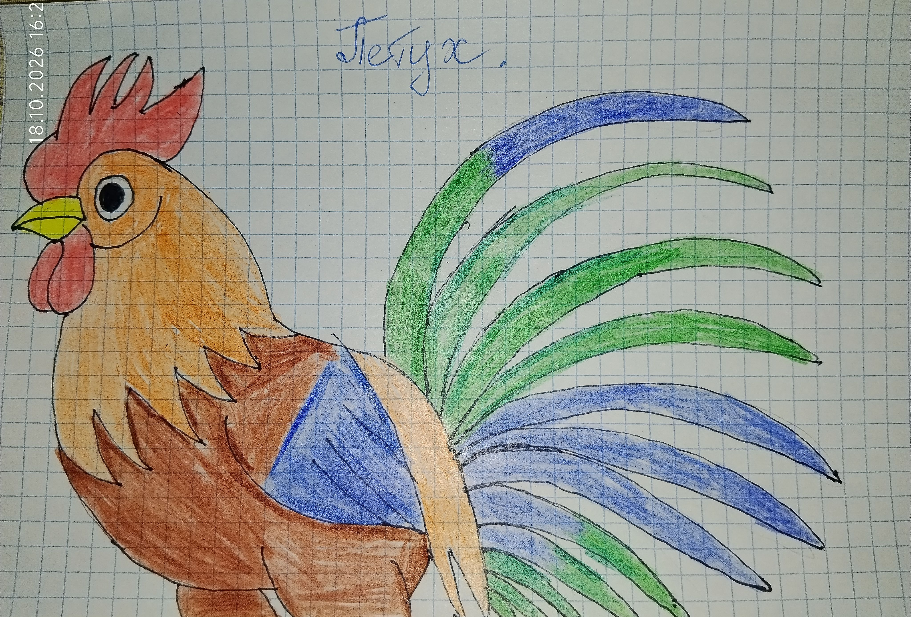

(Рисунок: Красный петух)

Петух был красный, важный и вредный. Он постоянно бегал за мной по двору и клевал мне ноги. Я убегала, а он догонял — видно, считал меня своей территорией.
Однажды я пыталась спрятаться от него и забежала в сарай. Там было темно, я наступила на что-то острое и посадила занозу в большой палец ноги. Было больно, но я терпела — лишь бы петух не нашёл. С тех пор я всегда обувалась, прежде чем выйти во двор.